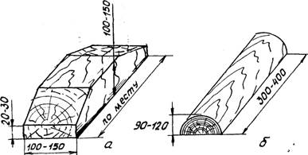
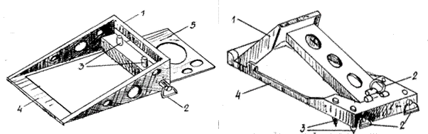
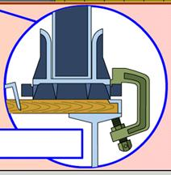

• Упорные бруски • Универсальные многооборотные крепления
• Типовые упорные и боковые бруски • Металлические шпоры
• Деревянные вкладыши • Упорные металлические башмаки
• Подкладки, прокладки и распорные бруски • Струбцины – растяжки и струбцины
К приспособлениям для крепления относятся: типовые упорные и боковые деревянные бруски для закрепления колесных машин, деревянные вкладыши для закрепления ВГМ, табельные растяжки, металлические шпоры, упорные башмаки, струбцины, струбцины-растяжки, универсальные многооборотные крепления (УМК). Все приспособления используются многократно.
Упорные бруски, показанные на рисунке ниже, (полу кругляк, четвертушки поленьев, обрезки шпал и др.) препятствуют перемещению ВГМ и колесных машин вдоль платформ.
Рис. Упорные бруски
Размеры брусков устанавливают в зависимости от массы ВГМ или диаметра колеса приведены в таблицах ниже.
|
Размеры бруска мм (не менее) |
Диаметр колеса, мм |
|||||
|
Менее 500 |
500-799 |
800-1099 |
1100-1399 |
1400-1599 |
1600 и более |
|
|
высота |
40 |
50 |
75 |
100 |
135 |
150 |
|
ширина |
100 |
100 |
120 |
160 |
200 |
220 |
|
|
|
|
|
|
|
|
|
Размеры бруска мм (не менее) |
Масса ВГМ, т |
||
|
До 12,0 |
12,1-18,0 |
Более 18,0 |
|
|
высота |
75 |
100 |
180 |
|
ширина |
150 |
180 |
200 |
Длина бруска при прилежании его длинной стороной к гусенице или колесу должна быть не менее ширины гусеницы или несколько больше ширины колеса (при двухскатных колесах больше ширины обоих скатов).
Для закрепления колесных машин допускается применение упорных брусков прямоугольного сечения, составленных из двух частей по высоте.
Боковые бруски наряду со скобами препятствуют поперечному перемещению ВГМ на платформе при некоторых способах закрепления и колесных машин, когда борта платформ не могут быть закрыты, а также при расположении их над сцеплением платформ.
· Типовые упорные и боковые бруски
Типовые упорные (а) и боковые бруски (б, в), показанные на рисунке ниже, препятствуют продольному и поперечному перемещению колесных машин на платформах и используются многократно.

Рис. Типовые упорные (а) и боковые бруски (б, в)
Изготавливаются они грузоотправителем. Допускается изготовление типовых брусков из материалов, предоставляемых железной дорогой для закрепления техники воинских эшелонов.
Боковые бруски (б, в) для закрепления ВГМ должны иметь размеры не менее 100Х100Х Х 2000 мм.
Для колесных машин с диаметром колес до 1200-мм размеры брусков должны быть не менее 75X75X400 мм, при большем диаметре не менее 100Х100Х1000 мм.
Деревянные вкладыши, показанные на рисунке ниже, применяют при закреплении ВГМ для предотвращения перекатывания опорных катков по нижним ветвям гусениц.

Рис. Деревянные вкладыши а) продольный б) поперечный
· Подкладки, прокладки и распорные бруски
Подкладки, прокладки и распорные бруски применяют для рассредоточения нагрузок, предохранения техники от повреждений.
Длина поперечных подкладок должна быть равна ширине вагонов, а прокладок - ширине груза. Разрешается выход концов прокладок за погруженный груз до 200 мм при условии обеспечения габаритности погрузки.
Высота подкладок и прокладок должна быть не менее 25 мм, а распорных брусков - 50 мм.
Растяжки (увязки, обвязки) для закрепления техники могут быть одноразового пользования (проволочные) или многоразового (табельные).
Табельные растяжки (стропы механизированные) могут быть тросовые и цепные, показанные на рисунке ниже.

Табельная растяжка представляет собой цепь или трос, снабженные натяжным устройством (талрепом) и двумя звеньями, которые закрепляют за увязочные устройства вагона и машины.
Проволочная растяжка (увязка, обвязка) - это туго натянутые, скрученные нити проволоки, как показано на рисунке ниже, соединяющие увязочные устройства вагона и машины, а также машины между собой. Растяжки закрепляют на машинах за буксирные крюки или петли, мосты, рамы, и другие детали которые обеспечивают прочность закрепления и не могут быть повреждены растяжками или вызвать их срез.

На ВГМ растяжки допускается закреплять за гусеницы в обхват. На колесных машинах, установленных над сцеплением вагонов, растяжки закрепляют за задние или за задние и средние мосты.
Растяжки не должны касаться резиновых покрышек колес машин, острых металлических деталей вагонов, техники и одна другой.
· Универсальные многооборотные крепления
Универсальные многооборотные крепления (УМК-1К и УМ К-2К) применяют для закрепления на железнодорожных платформах колесных машин.

Крепления представляют собой складывающиеся упоры со свободно перемещающимися вертикальными штырями, которые забивают в платформы и фиксируют специальными устройствами (фиксаторами).
В зависимости от массы машин применяют два типа креплений.
|
ТИП УМК |
Масса машины, т |
Состав комплекта |
Габариты пакета, мм |
Масса комплекта, кг |
|
УМК – 1КМ |
1,5 – 16,0 |
4 продольных и 4поперечных упора |
470*170*110 |
34 |
|
УМК – 2КМ |
16,1-24,0 |
570*210*140 |
64 |
|
|
Примечание: Машины массой 24,1 – 42,0 т закрепляют двумя комплектами УМК -2К |
||||
Универсальные многооборотные крепления (УМК-1Г и УМК-2Г) применяют для закрепления на железнодорожных платформах гусеничных машин.

Комплект состоит из четырех упоров, которые укладывают под гусеницы в районах опирания на них вторых и предпоследних опорных катков. Упоры препятствуют продольным и поперечным перемещениям техники.
Два упора укладывают под одной и два под другой гусеницей.
Масса ВГМ, тип упоров для их закрепления, обозначения упоров должны соответствовать данным таблицы. Обозначение наносится на каждом упоре.
|
Масса ВГМ, т |
Тип УМК |
Обозначение упора |
|
7 – 25 25,1 - 42 |
УМК – 1Г УМК – 2Г |
ЦУП ВОСО УМК – 1Г ЦУП ВОСО УМК – 2Г |
Металлические шпоры применяют для закрепления на железнодорожных платформах определенных типов ВГМ, как показано на рисунке ниже.

Рис. Металлические шпоры:
1-плита; 2-гребни плиты; 3-стойка; 4-ограничитель;
5-фиксатор; 6-шплинт; 7-отверстие для ограничителя
Шпоры представляют собой металлическую опорную плиту с вертикальными полками в виде гребней, которые под действием массы машины входят в доски пола платформы.
Для соединения с траком гусеницы на плите имеются две вертикальные стойки с фиксаторами (поворотными прижимными флажками). Основные характеристики шпор приведены в таблице ниже.
|
Тип шпор |
Размеры опорной плиты (длина*ширина*толщина) мм |
Высота гребня (штыря), мм |
Масса комплекта (четырех шпор), кг |
|
Ш-429 |
580*130*16 |
30 |
108,0 |
|
Ш-137 |
585*140*12 |
30 |
48,0 |
|
Ш-434 |
545*150*16 |
28 |
57,4 |
|
Ш-216 |
605*140*25 |
30 |
84,0 |
|
Ш-575 |
370*120*9 |
23 |
26,8 |
|
Ш-915 |
250*100*5 |
30 |
8,0 |
|
Ш-350 |
375*130*12 |
25 |
31,0 |
|
Ш-70 |
590*146*14 |
28 |
48,0 |
|
Ш-65 Л |
530*170*14 |
28 |
60,0 |
|
Ш-303 |
500*140*12 |
30 |
38,8 |
|
Ш-78 |
380*110*10 |
30 |
25,0 |
· Упорные металлические башмаки
Упорные металлические башмаки применяют для закрепления на железнодорожных платформах ВГМ.
Упорный башмак представляет собой металлическую опорную плиту с приваренными к ней шестью штырями и корпусом с фиксатором или стержнем с гайкой взамен фиксатора.

Рис. металлические упорные башмаки:
а - КТТ; 1 -палец; 2 -флажок; 3 -корпус; 4 -плита; 5 -штырь;
б - КТ-137; в - КТ-34; г -КТП; 6 -стержень; 7 -скоба
· Струбцины – растяжки и струбцины
Струбцины-растяжки МК-765 и струбцины С-765 допускается применять для закрепления на железнодорожных платформах ВГМ при транспортировании.
Струбцина – растяжка (рис. ниже) представляет собой круглый стержень с захватом на одном и стопорной гайкой на другом конце. По стержню свободно перемещается скоба с фиксатором стопорной гайки.

Струбцина (рис. ниже) представляет собой металлическую скобу со стопорным (зажимным) болтом.
